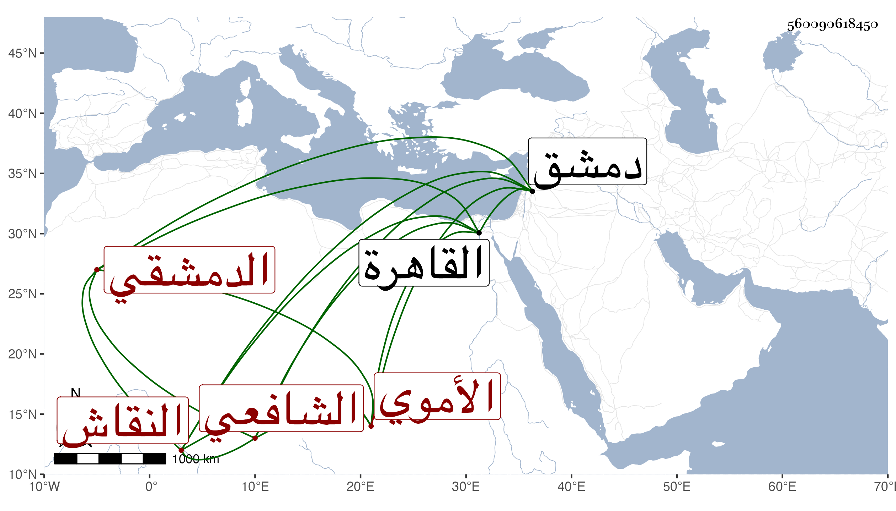

0902Sakhawi.DawLamic.ITO20230111-ara1.EIS1600.560090618450
Biography ID: 560090618450
446
عثمان بن أحمد بن عثمان بن محمود بن محمد بن علي بن فضل بن ربيعة الفخر بن الشهاب بن الإمام الفخر النقاش الأموي الدمشقي الشافعي ويعرف بابن ثقالة ولد في العشر الأخير من رمضان سنة ... واشتغل في فنون العلم والأدب كثيرا وتجرع فاقة كبيرة بحيث كان يأكل قشور الليمون وكانت له جافظة قوية ثم أنه خالط الصوفية واختلى واشتغل بعلومهم حتى شاركهم فيها واعتنى بالروحانيات فبرع في كثير منها وكذا اشتغل في الهيئة وعلوم النجوم حتى يقال أنه كان يحل الزايرجة ، ونظم الشعر الكثير الجيد كل ذلك مع الشكالة الحسنة والكلام العذب والصوت الشجي وعدم التردد إلى الناس واتصاف بخفة وعدم ثبات في الشدائد بحيث شاع عنه أنه ادعى أنه السفياني وخرج على المؤيد بأرض عجلون في ربيع الأول سنة ست عشرة حسبما أرخه المقريزي ، ولقيه البقاعي في سنة ست وعشرين بدمشق ثم في سنة سبع وثلاثين بالقاهرة وأخبره أنه سمع على ابن أبى المجد وأنه نظم غزلا في علم التصريف وعارض ابن الفارض في جميع ما بديوانه والصفي الحلي وغيرهما وكتب مما عارض به ابن الفارض :
| أبيت ولي قلب لذكراكم يتلو | وفي مهجتي من حر هجركم نصل |
إلى آخرها ، ومن نظمه أيضا :
| صفاتك لا تخفى على مبصريها | ومن قلبه أعمى فللحق يجحد |
| ظهرت فلا تخفي بطنت فلم ترى | وكل له سرب اليك فيصعد مات ... |
